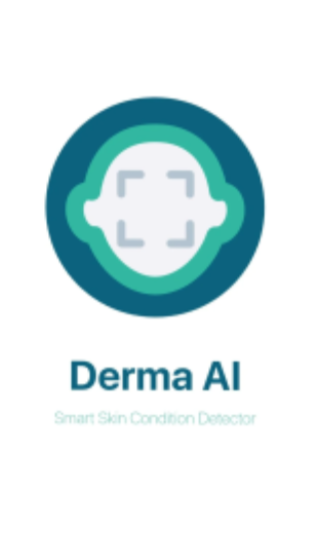
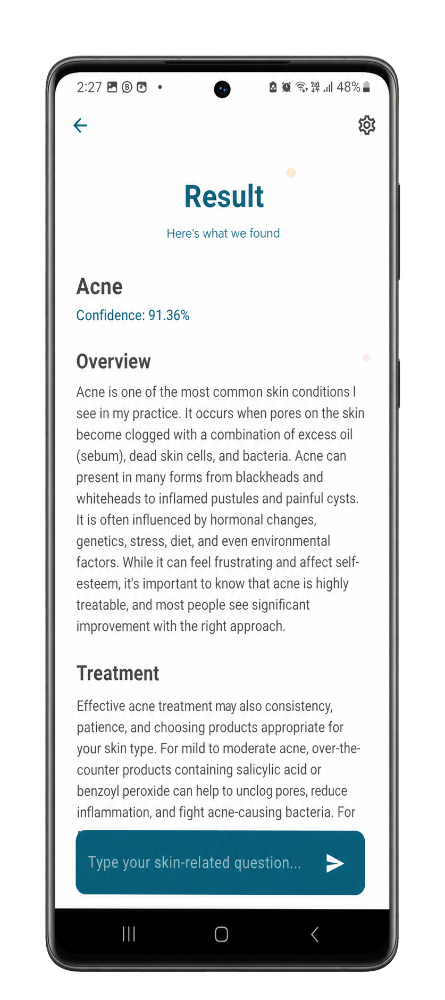
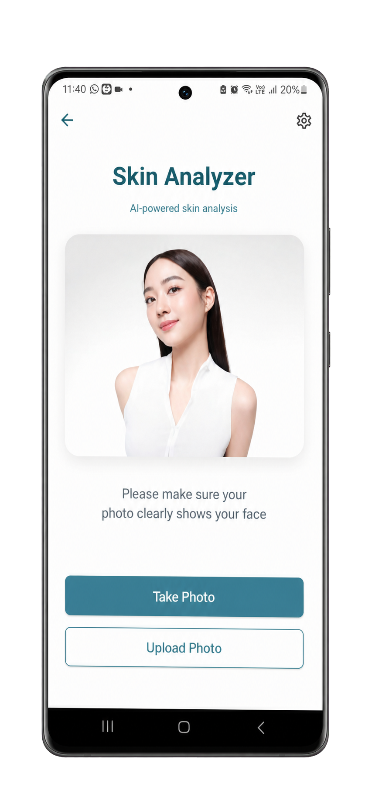

Project Case Study
DermaScan
An AI-assisted mobile concept that helps users analyze skin images and understand possible concerns through an accessible guided experience.

Project evidence
The interface work demonstrated by the available project screens.
Project visuals
The visual identity, guided skin analyzer, and result screen show the app's flow from image capture to clear, AI-assisted feedback.


The problem
People may overlook visible skin changes or struggle to understand when a concern deserves professional attention.
The solution
DermaScan guides users through image capture and AI-assisted interpretation, presenting possible skin concerns in a clearer and more approachable format.
My contribution
- Designed the guided mobile analysis flow.
- Created accessible input, scanning, and result interfaces.
- Developed the front-end presentation and visual hierarchy.
- Focused result language on clarity and responsible guidance.
Core experience
- Guided skin-image capture
- Image-quality feedback
- AI-assisted condition analysis
- Clear results and suggested next steps
- Accessible healthcare-focused interface
Challenge and response
AI results can sound overly certain. I structured the interface to communicate assistance rather than diagnosis and to encourage appropriate professional consultation.
What I learned
DermaScan strengthened my approach to sensitive UX writing, guided camera flows, healthcare interfaces, and responsible presentation of AI-assisted results.
Want to discuss this project?
I can explain the user flow and responsible AI interface decisions during an interview.